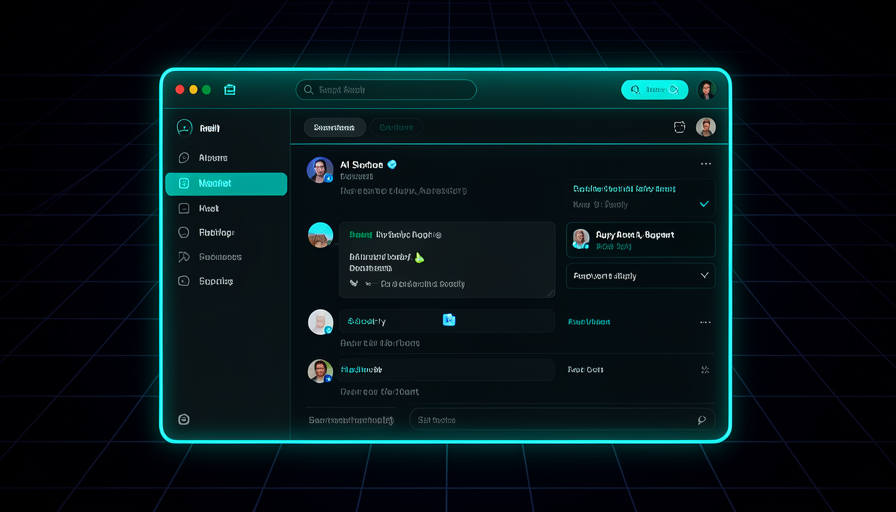
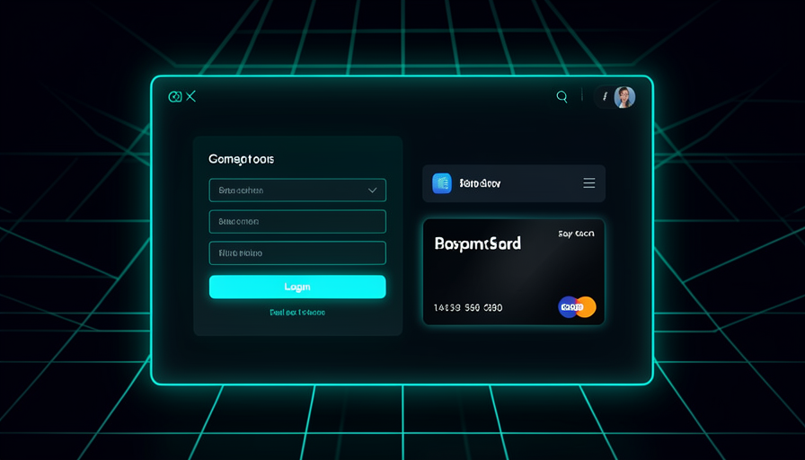

O caminho da trilha 5: do agente que roda na sua máquina, para agentes que vivem na nuvem, até um produto completo que outras pessoas usam e pagam.
Mapa da trilha
Conteúdo detalhado

📧 Projeto: Agente de Suporte por E-mail com RAG
Um agente que lê as políticas da empresa (PDFs) para uma base de conhecimento, classifica cada e-mail recebido e rascunha a resposta apoiada nos documentos — recusando inventar quando o assunto está fora de escopo. Você constrói dois workflows (indexador + agente), conecta credenciais, testa casos reais e aplica os 6 enhancements.
Um agente que transforma documentos de política (devolução, garantia, prazos) numa base de conhecimento e usa isso para responder e-mails de suporte com fundamento.
É o "olá mundo" dos agentes úteis: junta RAG, classificação e geração de texto num caso de negócio real.
Escopo claro; rascunho (não envio automático); humano no loop para aprovar.
Separar quem "aprende" (o indexador, que lê PDFs e popula o vector store) de quem "responde" (o agente, disparado por e-mail novo).
Separar indexação de consulta deixa cada parte simples de testar e barata de rodar.
Indexador (manual) vs agente (trigger); vector store compartilhado; embeddings.
Um único prompt em Plan Mode que descreve o resultado completo (gatilho, base de conhecimento, classificação, rascunho, fallback) e deixa a IA propor o plano.
Um bom prompt de abertura economiza horas — a IA pergunta o que falta antes de construir.
Plan Mode primeiro; descrever resultado; responder às perguntas de esclarecimento.
A IA monta o indexador (document loader → text splitter → embeddings → vector store) e o agente (Gmail trigger → classifier → retrieval → rascunho).
Ver os nós sendo criados ensina a anatomia de um pipeline RAG real.
Rodar o indexador uma vez; agente lê do vector store; testar passo a passo.
Conectar a conta de e-mail (OAuth) e a chave da IA — algo que VOCÊ faz com as mãos, porque a IA não tem (nem deve ter) acesso aos seus segredos.
É a fronteira clara entre o trabalho da IA e o seu; segredo nunca vai pro chat.
OAuth = autorizar sem dar senha; chave de API; credencial fica na ferramenta.
Mandar e-mails de teste para cada cenário: um sobre devolução, um sobre garantia, e um fora de escopo (que o agente deve recusar, não inventar).
Verde ≠ correto: só o teste com casos reais revela se o RAG está ancorando as respostas.
Casos de borda; recusar inventar; conferir números contra a política.
Seis melhorias incrementais em linguagem natural: fallback de confiança, filtro de tempo, ignorar e-mails automáticos, ajustar o tom, assinar com seu nome e usar score de confiança.
Mostra a iteração em camadas na prática — uma melhoria por vez, testando a cada uma.
Iterar; pedir mudança em PT; uma camada por vez; confidence score.
Uma checklist objetiva: indexa? classifica certo? ancora no documento? recusa fora de escopo? assina? respeita o filtro de tempo?
Definir "pronto" evita o loop infinito de "mais uma melhoria".
Definição de pronto; backup (export JSON); humano aprova o rascunho.
⏰ Projeto: Agentes Hospedados (Agendado + Webhook)
Tirar o agente da sua máquina e colocá-lo na nuvem, rodando sozinho. Você constrói dois: um agendado (cron → busca na web com Firecrawl → síntese → Google Sheets) e um por evento (webhook recebe um payload → gera um .docx → salva no Drive). Pelo caminho: OAuth refresh token, debug que só aparece em produção, auth Bearer, form no-code e deploy automático via GitHub.
Um agente que acorda por agenda (cron), busca conteúdo na web (Firecrawl), resume e grava cada linha numa planilha — sem você presente.
É o primeiro agente que "vive sozinho" — fecha o agentic gap entre local e produção.
Cron (5 campos); scraping; síntese; saída estruturada em Sheets.
Na nuvem não há janela de login: o agente usa um refresh token para renovar o acesso sozinho — e quando a interface falha, você o obtém pelo terminal.
É o atrito clássico de hospedar; saber o fallback destrava o deploy.
Access vs refresh token; renovação automática; fallback de terminal.
Erros que não acontecem localmente (timeout, env var ausente, formato de data) e como achá-los lendo o trace e devolvendo o erro com contexto pra IA.
Produção tem realidade própria; o loop humano de debug é a habilidade central.
Trace = passo a passo; devolver o erro; redeploy; logs significativos.
O segundo agente: recebe um payload via webhook, monta um documento .docx formatado e salva no Google Drive, devolvendo o link.
Ensina o disparo por evento — o agente reage a um pedido externo, não a um relógio.
Payload = dados do pedido; gerar arquivo; salvar e devolver link.
Um webhook é uma URL que, ao ser "tocada", dispara o agente. Como é pública, você a protege com um token Bearer no cabeçalho.
Sem auth, qualquer um toca a campainha; o Bearer é o cadeado básico.
URL de gatilho; header Authorization: Bearer; rejeitar sem token.
Um formulário simples (no-code) que, ao ser enviado, faz a requisição ao webhook com o payload — dando uma interface humana ao agente.
Conecta uma pessoa real ao agente sem você escrever frontend ainda.
Form → POST; mapear campos no payload; passar o token.
Conectar o repositório GitHub à plataforma de hospedagem para que cada push faça o deploy sozinho.
Tira o deploy manual do caminho; o código no repo é a fonte da verdade.
commit/push; deploy on push; .gitignore protege o .env.
Ler o painel: cada run (execução), seu trace (passo a passo), o schedule ativo e a separação dev vs prod.
Sem você presente, o dashboard é como você sabe que o agente está saudável.
Runs; traces; schedules; dev vs prod; alertas em falha.

🚀 Projeto: App Full-Stack (Lead Qualifier) + Frontend pra n8n
O projeto mais ambicioso: um app que outras pessoas usam. Backend que qualifica leads (Trigger.dev) + frontend (Vercel), conectados por env vars. Depois você adiciona autenticação (Supabase + RLS), faz uma auditoria de segurança, cobra com Stripe (freemium) e ainda constrói um frontend para um workflow n8n (form → webhook). Tudo em iteração incremental: design → auth → pagamento.
O modelo de duas pontas: o frontend (o que o usuário vê, na Vercel) chama o backend (a lógica do agente, no Trigger.dev) que faz o trabalho pesado.
Entender a divisão front/back é o que destrava construir produtos, não só automações.
Frontend vs backend; request/response; dois deploys separados.
Um app que recebe os dados de um lead, pontua/qualifica com IA e devolve a classificação — construído de um prompt de abertura abrangente.
Repete o padrão "descreva o resultado completo" agora num contexto full-stack.
Inputs fixos; saída estruturada; lógica de qualificação.
O frontend descobre onde está o backend (e a chave de acesso) por variáveis de ambiente — nunca por valor escrito no código.
É a costura que faz as duas pontas conversarem com segurança.
Env var; URL do backend; chave em runtime, não no código.
Adicionar login (Supabase) e Row Level Security (RLS), que garante no próprio banco que cada usuário só vê os próprios dados.
Sem RLS, um login certo ainda pode ler dados de outro; RLS é a defesa no nível dos dados.
Auth; RLS; migration; cada linha pertence a um usuário.
Pedir à IA uma varredura: rotas desprotegidas, chaves expostas, env vars vazando para o cliente, RLS ausente.
Um app aberto = risco: alguém pode gastar seus tokens ou ler dados alheios.
Superfície de ataque; chave no servidor; nada de segredo no cliente.
Adicionar checkout do Stripe e um modelo freemium: uso grátis até um limite, depois plano pago liberado por webhook.
Transforma um app em produto — receita real com fluxo testável.
Checkout; price ID; webhook secret; freemium; limite de uso.
Dar uma cara amigável a um workflow n8n: uma página com formulário que envia os dados para o webhook do fluxo e mostra o resultado.
Junta os dois mundos do curso — automação n8n com interface de app.
Form → POST webhook; CORS; exibir a resposta; URL do webhook em env var.
A ordem que funciona: primeiro o app feio mas funcional, depois o design, depois auth, depois pagamento — uma camada de cada vez.
Iterar em camadas mantém cada passo testável e reversível.
MVP primeiro; uma camada por vez; backup antes de mudar; testar a cada passo.